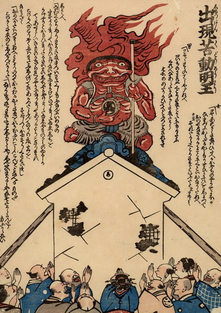

苦動明王；クドウミョウオウ，不動明王；フドウミョウ，鯰；ナマズ

壁が崩れかけた土蔵の屋根の上に、出現した苦動明王を人々が拝んでいる。苦動明王は不動明王をなぞらえたもので、全身が赤い。額が親父で顔が鯰のようであり、虎皮の腰巻きと脚絆をまとい、右手に小太鼓を持つ姿は雷神を思わせ、背には火炎を背負っており、地震雷火事親父を体現している。左手には割斧のようなものを持っている。
出典：親書誌：U426_nichibunken_0186：出現苦動明王；シュツゲンクドウミョウオウ／日付：2010／資源識別子：U426_nichibunken_0186_0001_0000
Copyright (c)2010- International Research Center for Japanese Studies, Kyoto, Japan. All rights reserved.